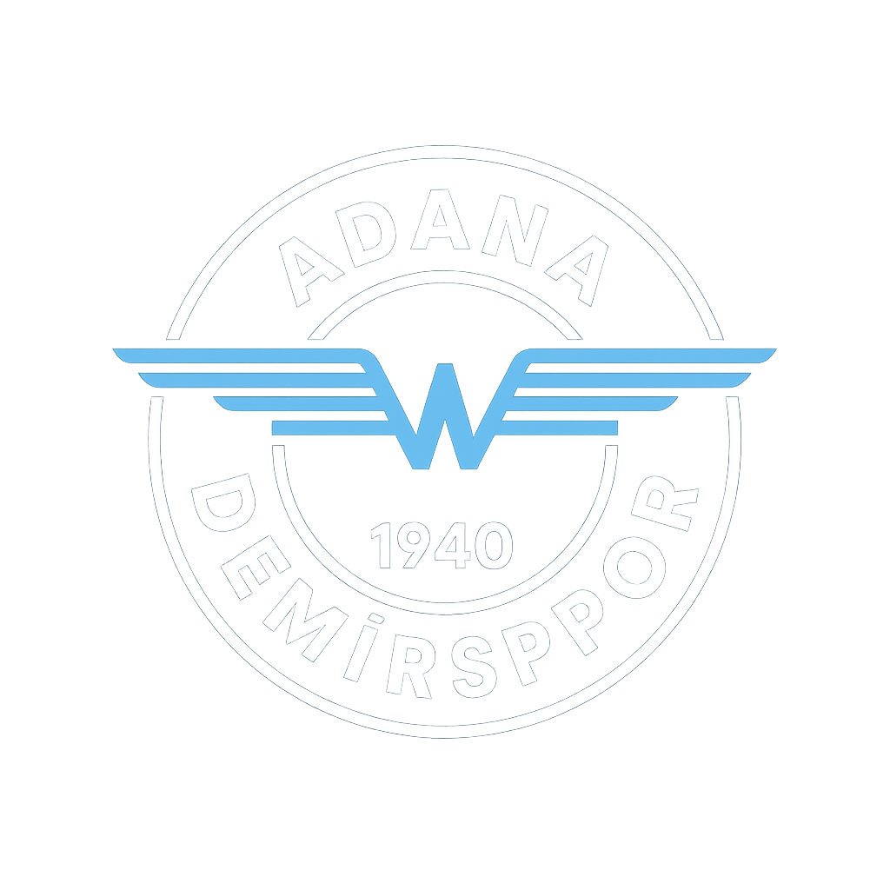
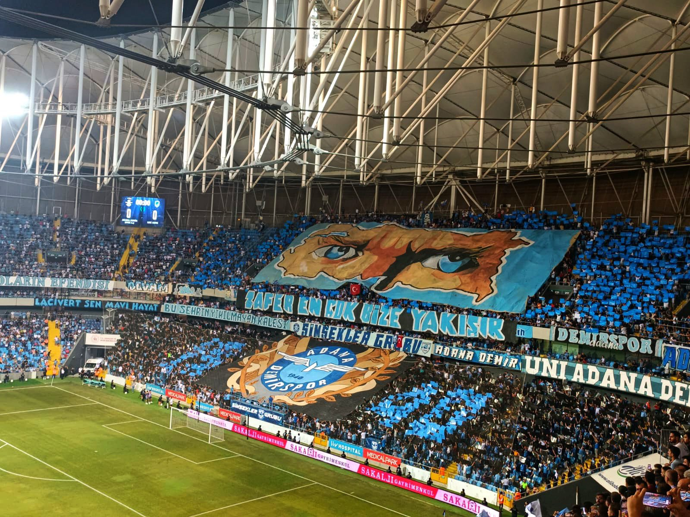

Adana Demirspor
Adana'nın gururu, mavi şimşekler olarak bilinen futbol kulübü.
🏟️ Kulüp Hakkında
Adana Demirspor, resmî olarak 28 Aralık 1940'ta Adana'da kurulmuş, renkleri mavi-lacivert olan spor kulübüdür. Süper Lig'de mücadele etmektedir. 1960 yılında Adana kentinin TFF tarafından organize edilen profesyonel ligde temsil edilen ilk takımıdır.
🥇 Kulüp Başarıları
- 1. Lig Şampiyonluğu (4 Defa)
- Süper Lig'de bulunduğu sezon (17)
- UEFA Avrupa Konferans Ligi Ön Elemeleri (2023)
📋 Teknik Bilgiler
| Kuruluş | 1940 |
|---|---|
| Stadyum | Yeni Adana Stadyumu |
| Kapasite | 33.543 |
| Toplam Piyasa Değeri | 11.65 mil. € |
| En Bilinen Oyuncu | Mario Balotelli |
🇹🇷 Türkiye Liglerinde Oynanan Maçlar
- Toplam Maç: 1.200+
- Galibiyet: 510
- Beraberlik: 340
- Mağlubiyet: 350
- Efsanevi Maç Skoru: 5-1 Galatasaray (1988)

Adana Demirspor Resmi Logosu
🎺 Taraftar Grubu
Adana Demirspor’un taraftar grubu “Şimşekler” olarak bilinir. Türkiye’nin en ateşli taraftar gruplarından biridir.
📸 Taraftar Görseli

Şimşekler Grubu - Yeni Adana Stadyumu